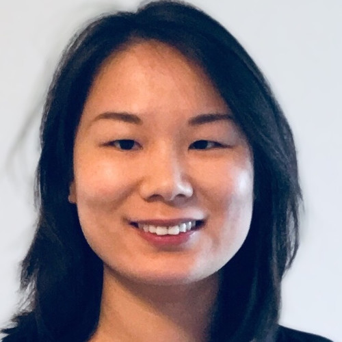
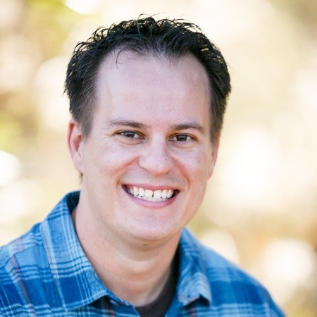
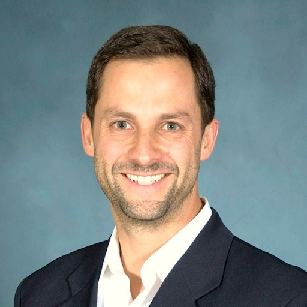

Thanks for visiting! We are Ying, Cody and Cris, students of FourthBrain's Machine Learning Engineer course, cohort 9 (August-December 2022) and this is our capstone project.
Ying Hu
Hello, my name is Ying Hu. I'm a research mathematician in the area of geometric topology. I received my Ph.D. at Louisiana State University and spent three years in Canada as a research fellow at McGill University and Université du Québec à Montréal. Currently, I am an assistant professor at the University of Nebraska, Omaha.
In addition to pure math research, I also work on applied projects with researchers in the engineering departments. I've recently developed a keen interest in machine learning and artificial intelligence, and I look forward to seeing what machines and humans together can achieve!
I grew up in Chengdu, China, a beautiful city with lots of delicious food and adorable pandas :)
Cody McCormack
Hey! I'm Cody McCormack. I'm a data analyst and engineer, with experience in digital marketing, product, retail and finance.
As a linguistics major, and rising math master's student at Johns Hopkins, I'm very interested in machine learning's applications to language data, and how ML models can be used to better parse the vast amount of text data available on the web. I plan to do my master's thesis on topological data analysis, and better understand how dimensionality impacts machine lerning algorithms.
Outside of work, I enjoy hiking, running, reading, and spending time with my wife and dog in beautiful Ogden, Utah.
Cris Fortes
My name is Cris Fortes and I'm focused on artificial intelligence, machine learning and deep learning that accelerate business transformation. I see that as a natural evolution of my career as a transformative, results-driven and people-developing leader in strategic sourcing & procurement (Amgen, J&J, WPP) and marketing, sales, product management and general management (J&J, Yahoo!, DIRECTV, Siemens).
I've worked, lived and studied in the U.S., Europe and Latin America and speak Portuguese, Spanish and German.
I call beautiful Southern California home.